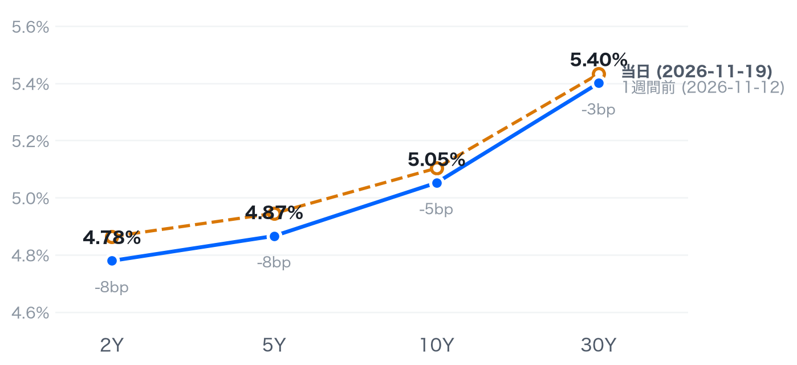

アンソロピック上場を控えて高く始まった米国株は、寄り付き直後に当日の高値をつけた後に売られ、S&P 500は2.02%下落して6営業日続落した。単一の材料では説明できない売りで、成長株と半導体の下げが最も大きかった。
2年債利回りが低下しドルがほとんど動かなかったため、新たな金利ショックの形跡はない。当社は半導体・AIハードウェアの軟調を、政策の再評価よりAI株のリスク削減に近いとみるが、金利が再び上昇する日にハイテク株がどう反応するかで確認する必要がある。
11月19日の米国株は、アンソロピック上場期待を背景に高く始まったが、寄り付き直後から引けまで一貫して売られた。S&P 500は2.02%下落して6営業日続落し、11セクターすべてが下げた。ウォール街のアナリストは単一の材料でこの急落を説明できなかったと報じられた。ハイテク株の中では、空売りリサーチ会社ハンターブルックが疑惑を指摘する報告書を出したAMDの下げが最も大きかった。
当社はこの下落を、金利の再評価よりAI株に積み上がったポジションを減らす売りに近いとみる。リスク回避が強まったにもかかわらず2年債利回りは2.1bp低下し、ドル指数はほとんど動かず、政策金利の期待が上方に動いて株を押し下げた形跡は終値にない。売りは成長株に偏った。アンソロピックが史上最大規模の上場だったとの報道があり、公募資金を手当てするための売りという説明も可能だが、指数の高値は寄り付き直後だった。市場の一部では、アンソロピック株の取引が午後1時48分になってようやく始まったとの見方もあった。最も強い反論は累積した引き締め圧力である。INGは2年物実質スワップ金利が2.40%を上回り、2023年以降で最も高いとみており、ジェファーソンFRB副議長が、大規模なAIインフラ投資が需要を押し上げ、物価に上昇圧力をかけていると述べたとの見方も出た。金が株と一緒に下げたのは、現金を確保するための売りとも実質金利の負担とも整合し、二つの説明を分けられない。市場がこの下落の前にどのような期待を織り込んでいたかは、測定値を得られなかった。
半導体・AIハードウェア業種の相対リターンはこの日さらに悪化したが、下げ幅が大きいのはエヌビディアとAMDの二銘柄である。AMD固有の材料が業種比較を曇らせており、この一日で業種の利益見通しが変わったとはみず、新たなアイデアも出さない。まず確認すべきは、金利が変わらないままハイテク株が戻るかどうかだ。ディフェンシブ業種もこの日は絶対リターンを守れなかった。エネルギーと公益の下げが小さかっただけで、全業種が下げた。ウォン現金と短期債の側では、継続失業保険申請件数の急増がミシガン一州に集中しており、2年債利回りの低下を労働市場減速の織り込みと読むのは早い。判断の時間軸は11月20日のオプション満期から11月25日のPCE物価・失業保険申請件数の発表までの一週間で、借り入れ・オプションのコストに関する資料がなく、ポジションを取る手段のコストは検討できない。
リスク削減の判断は、金利とハイテク株の組み合わせで確認する。2年債利回りと実質金利が上昇する日にハイテク株がさらに下げれば、金利再評価を優先的な説明とみて解釈を修正する。金利が変わらないのにハイテク株が戻れば、リスク削減の判断を裏付ける。継続失業保険申請の判断は、11月25日08:30 ETの労働省発表で、11月14日週の季節調整済み継続申請件数の前週改定値比の変化が-17,150件以下なら裏付けられ、+17,150件以上なら弱まり、労働市場減速の拡大を優先的な説明とみる。
出所: CBS, AP, The Guardian
| 指数 | 終値 | 騰落 | 基準日 |
|---|---|---|---|
| DAX | 25,463.81 | -1.06% | 11月19日 |
| FTSE100 | 10,452.68 | -0.93% | 11月19日 |
| ユーロ・ストックス50 | 6,113.86 | -0.66% | 11月19日 |
| VIX | 28.44 | +3.88p | 11月19日 |
欧州三指数とVIXはいずれも11月19日の値である。日経225・ハンセン・上海総合は当該セッションの値を得られず、掲載していない。VIXの騰落はポイントである。
欧州が先に軟調で、米国はその弱さをより大きく引き継いだ。欧州三指数は平均0.88%下落し、DAX(-1.06%)の下げが最も大きかった。アジア三指数は当該セッションの終値を得られず、米国と方向を比較できなかった。
夜間にS&P先物(ES)は前日16:00(ET)の安値7,332から06:30(ET)の高値7,440.5まで1.48%のレンジで上昇し、ナスダック先物(NQ)は同じ時間帯に2.57%のレンジとさらに大きく動いた。アンソロピック上場期待が先物を押し上げたと報じられた。現物はS&P 500が+0.9%、ナスダックが+1.52%、ラッセル2000が+0.22%と高く始まった。08:30(ET)には新規失業保険申請件数と11月のフィラデルフィア連銀製造業指数が発表された。
三指数とも安値圏で引けた。寄り付き直後が当日の高値で、日中の反発の試みもなく、終盤にかけて安値付近まで売られたまま引けた。
高値圏・安値圏は、終値が当日の高値と安値の間のどこで引けたかを日々測って集めた履歴(指数3本の日次観測値2,259件)から測り直した境界で分ける。観測値を低い順に並べたとき、上から4分の1の地点以上なら高値圏、下から4分の1の地点以下なら安値圏での引けである。
一方向の売りが業種・資産を問わず市場を覆った日である。株はハイテクからディフェンシブ業種まですべて下げ、国債は終盤の安全資産需要で短期ゾーンから強くなり、金も株と一緒に売られた。VIXは3.88ポイント上昇の28.44で、直近2年(504営業日)のうちこれより高かった日は17日しかない。通常取引の後には、イントゥイットがメールチンプ売却とともに予想を下回る通期利益見通しを出し、時間外で15%急落し、ギャップは通期売上高見通しを横ばいに引き下げた。二つの材料はこの日の終値後に出た。
出所: Yahoo Finance, CNBC
| 指数 | 終値 | 騰落率 |
|---|---|---|
| S&P500バリュー | 231.74 | -1.49% |
| S&P500 | 7,175.83 | -2.02% |
| ラッセル2000 | 2,655.11 | -2.18% |
| ダウ・ジョーンズ | 49,097.06 | -2.19% |
| ナスダック | 23,879.20 | -2.25% |
| S&P500グロース | 125.02 | -2.33% |
| セクター | 騰落率 |
|---|---|
| エネルギー | -0.65% |
| 公益事業 | -1.24% |
| 生活必需品 | -1.45% |
| 金融 | -1.49% |
| 不動産 | -1.70% |
| 情報技術 | -1.90% |
| 資本財・サービス | -2.00% |
| ヘルスケア | -2.05% |
| 素材 | -2.06% |
| コミュニケーション・サービス | -2.67% |
| 一般消費財 | -2.79% |
上場期待で始まった相場が安値で引け、S&P 500は2.02%下落の7,175.83で6営業日続落した。値動きは通常の一日の変動幅の2倍強だった。ナスダックは2.25%安の23,879.20、ダウは2.19%安の49,097.06、ラッセル2000は2.18%安の2,655.11と、大型・小型を問わず同程度の幅で下げた。
ナスダックは寄り付き直後に前日終値を2%超上回る24,936まで上昇したが、終盤に23,871まで売られ、始値比3.75%下落した安値付近で引けた。S&P 500も高値7,416から安値7,174まで下げ、終値は事実上当日の安値だった。日中の反発の試みは引けまで持たず、下落は取引終了まで続いた。
下落の原因は一つに特定できない。ウォール街のアナリストが単一の材料でこの急落を説明できず、S&P 500構成銘柄の90%以上が下げたと報じられた。確認できるのは売りの形である。成長株が2.33%下げ、バリュー株(-1.49%)より大きく売られたが、2年債利回りが低下した日であり、金利上昇がバリュエーションを押し下げた経路は終値からは見えない。キャピタル・エコノミクスは、アンソロピック上場がハイテク株の熱気を呼び戻せなかったと評した。寄り付きのギャップを作った上場期待が後退すると、AI関連の大型株に積み上がったポジションから整理されたとの解釈が状況に最も近いが、売り手を示す資料はない。
指数下落の最大の部分はハイテク業種が作った。推定寄与度ではハイテク-0.64%p、一般消費財-0.37%p、通信サービス-0.34%pが大きく、ヘルスケア-0.19%p、金融-0.16%p、資本財-0.12%p、生活必需品-0.05%p、公益-0.04%p、エネルギー-0.02%pが続いた。業種の合計で説明できない部分は-0.09%pである。ハイテク業種は1.90%下げて下落率は指数と同程度だったが、規模が大きく寄与が最も大きかった。下落率自体は一般消費財(-2.79%)と通信サービス(-2.67%)が最大だった。
推定寄与度は業種ウエートを直接得られないため、直近252営業日の指数・業種リターンから推定したウエートを掛けた値である。素材と不動産はウエートを推定できず除いた。
前日とは下落の性格が異なる。11月18日の指数下落はエヌビディアのガバナンス問題やマネージドケア規制案といった個別材料に結びついていたが、この日はエネルギーを除くすべての業種が1%超下げた。6営業日続いた売りが個別銘柄から市場全体に広がった点で、この下落を一部銘柄の調整とだけみる根拠は弱まった。
出所: CBS, AP, Decrypt
| 年限 | 終値 | 前日比(bp) | 1週間前 | 週間変化(bp) |
|---|---|---|---|---|
| 2Y | 4.779% | -2.1 | 4.864% | -8.5 |
| 5Y | 4.866% | -1.8 | 4.945% | -7.9 |
| 10Y | 5.052% | -1.4 | 5.103% | -5.1 |
| 30Y | 5.401% | -1.1 | 5.433% | -3.2 |
株が急落した日に国債は短期ゾーンからわずかに強くなった。2年債は2.1bp低下の4.779%、5年債は1.8bp低下の4.866%、10年債は1.4bp低下の5.052%、30年債は1.1bp低下の5.401%で引けた。10年債の動きは通常の一日の変動幅の4分の1程度と小さかったが、水準は高い。10年債は直近2年(504営業日)のうちこれより高かった日が26日しかなく、30年債は25日しかない。

カーブチャートの「今日」は11月19日終値、「1週前」は11月12日終値である。1週前より2年債は8.5bp、10年債は5.1bp、30年債は3.2bp低い。
一日では2年債が10年債より0.7bp多く低下した、小幅なブル・スティープ化である。2s10sは27.3bp(前日26.6bp)、5s30sは53.5bpだ。1週前と比べても形は同じである。2年債が8.5bp低下する間に30年債は3.2bpの低下にとどまり、一週間で短期ゾーン中心のブル・スティープ化が進んだ。この日短期ゾーンがより下げたのは、株売りが強まって国債が買われ、2年債が終盤の安全資産需要で低下したとの報道と同じ方向である。リスク回避の相場で10年債の低下が1.4bpにとどまった理由は確認できていない。
金利を実質金利と期待インフレに分けた最新データは11月18日分である。その日の10年債3bp低下は実質金利-1bp、期待インフレ-2bpの内訳で期待インフレ側が大きく、5営業日に広げると9bp上昇のうち10bpが実質金利だった。11月19日の値は期待インフレのみ出ており、10年期待インフレは3bp低下の2.16%である。原油が上昇した日に期待インフレが低下したことは原油では説明がつかないが、期待インフレにはリスク・流動性プレミアムも混じっている。この日の名目金利低下に占める実質金利の寄与は、11月19日の実質金利が出るまで確認できない。ハイイールド・スプレッドは11月18日に3.47%で、5営業日で17bp拡大した。
5年先5年の名目金利5.25%、実質3.1%(11月18日基準)。期待インフレ側の数値とのクロスチェックはできず、リスクプレミアムが混じった値である。
| 入札 | 規模 | 落札 | 応札倍率 | 間接 | 直接 | ディーラー | 判定 |
|---|---|---|---|---|---|---|---|
| 10年TIPS再発行 | 190億ドル | 実質2.903% | 2.43倍(2.39倍) | 68.6% (63.9%) | 25.4% (24.9%) | 6.0% (11.3%) | 需要強い |
財務省は11月19日、10年TIPS再発行190億ドルを実質落札利回り2.903%で販売した。規模は直近の同年限入札(9月17日)の190億ドルと同じだった。応札倍率は2.43倍で直近6回平均の2.39倍より0.04倍高く、ディーラー比率は6.0%と平均より5.3%p低かった。海外中央銀行・機関の需要の代理指標である間接落札比率は68.6%で、平均より4.7%p高かった。ディーラーが引き受けた割合が平均の半分強に減り、間接比率が上昇しており、最終投資家が直接買い取った入札であることから、需要強いと判断する。
| 項目 | 水曜残高 | 残高の週間変化 | 週平均の前週比 | 前年比 |
|---|---|---|---|---|
| 準備預金 | 3兆18億ドル | +318億ドル | +191億ドル | +910億ドル |
| TGA(財務省口座) | 8,923億ドル | -198億ドル | +22億ドル | -253億ドル |
| 市場リバースレポ(ON RRP) | 3.3億ドル | +1.8億ドル | +1.4億ドル | -17億ドル |
| 海外リバースレポ | 3,167億ドル | -194億ドル | -122億ドル | -44億ドル |
| 保有国債 | 4兆5,871億ドル | +5.2億ドル | +36億ドル | +3,948億ドル |
| 保有MBS | 1兆8,835億ドル | -0.6億ドル | -0.2億ドル | -1,864億ドル |
| 通貨ペア | 終値 | 騰落率 | 基準日 |
|---|---|---|---|
| DXY | 103.888 | +0.10% | 11月19日 |
| USD/KRW | 1,333.63 | +0.09% | 11月19日 |
| USD/JPY | 159.668 | +0.23% | 11月19日 |
| EUR/USD | 1.0979 | 0.00% | 11月19日 |
リスク回避が強まった日もドルはほとんど動かなかった。ドル指数は0.10%上昇の103.888で、通常の一日の動きの3分の1程度、直近2年(504営業日)のうち高い方から17%以内にある。ドル/円は0.23%上昇の159.668円、ドル/ウォンは0.09%上昇の1,333.63ウォンで、直近2年のうちこれより低かった日が11日しかない水準にとどまった。ユーロ/ドルは16:00 ETの値が前営業日と同じ1.0979と記録された。
株急落でもドルは安全資産需要で上昇せず、円も強くならなかった。米2年債利回りが低下した日で、金利面はドルを押し上げなかったが、相手国の金利を併せて測っていないため、金利差がどちらに動いたかは分からない。INGは米政策金利の経路を根拠にドル指数が104.60近辺まで上昇すると見ていたが、この日の終値はその見方を裏付けも否定もしなかった。
為替はニューヨーク16:00 ETの価格で、前営業日の同時刻比である。決済価格とは異なる場合がある。ユーロ/ドルは二つの時刻の値が小数点以下まで同じで、価格が更新されていない可能性がある。
出所: ING
| 品目 | 終値 | 騰落率 |
|---|---|---|
| WTI | $83.08 | +1.49% |
| Brent | $90.00 | +1.40% |
| 天然ガス | $3.246 | -4.75% |
| 金 | $3,661.60 | -1.78% |
株と金がそろって売られた日、原油は逆に上昇した。WTIは1.49%高の83.08ドル、ブレントは1.40%高の90.00ドルで取引を終えた。金は1.78%安の3,661.60ドルで2営業日続落、天然ガスは4.75%安の3.246ドルだった。
金はアジア時間の高値3,745.60ドルから米国時間後半の安値3,660.50ドルまで終日売られ、安値圏で引けた。名目国債利回りが低下した日であり、金利上昇では説明できない。株急落と同時に売られた点は、損失を埋めるための現金確保売りと整合的で、10年実質金利が11月18日まで5営業日で10bp上昇し、保有負担が積み上がったこととも整合的であるため、二つの説明は切り分けられない。
原油高の原因は確認できていない。WTIは欧州時間の安値81.66ドルから09:00(ET)の高値83.91ドルまで上昇した後、上昇分の大半を維持した。同日、米中ロ首脳の共同宣言が精製石油製品の生産・供給拡大を盛り込んだとの報道が出たが、原油はそれと反対に上昇した。ブレントとWTIの価格差は6.92ドルで、前営業日の6.90ドルとほぼ同じであり、上昇は両油種に等しく表れた。表のWTIは1月限、ブレントは2月限のため、価格差には限月の違いも含まれる。天然ガス下落の原因も確認できていない。
商品・為替はニューヨーク16:00 ETの価格で、前営業日の同時刻比である。決済価格とは異なる場合がある。金の一日の動きは、直近60営業日の平均的な一日の変動の1.29倍である。
出所: CNBC
エヌビディア(-3.3%)とAMD(-7.72%)は、半導体・AIハードウエア関連株の下落を拡大させた銘柄である。AMDは、空売り調査会社ハンターブルックが、2025年3月に米国のブラックリストに載った中国のサーバー企業IEIT SystemsがAMDのファームウエア最新版を自社製品の少なくとも6つに組み込んだとの疑惑を盛り込んだリポートを出した後、急落した。リポートは売上高の20%超が中国・香港の顧客であり、新たな輸出規制が海外事業をさらに圧迫しかねないと指摘し、ハンターブルック系のファンドはAMDの空売りポジションを開示した。AMDは疑惑に反論し、リポートの内容は独立に検証されていないとの報道が出た。エヌビディアはこの日、固有の材料が確認されないまま6営業日続落した。ウォール・ストリート・ジャーナルを引用し、ウォール街の金融機関がエヌビディアの顧客によるチップ購入を支援すると約束した5,000億ドルのうち、まだ実行された資金はなく、チップ向けファイナンスは増えにくいとの見方も出た。
アルファベット(-3.46%)は、コミュニケーション・サービス業種の下落を拡大させた。この日、同社固有の材料は確認されていない。
パロアルト(+6.42%)とクラウドストライク(+2.71%)は、市場全体が下落した日にソフトウエア業種の中でサイバーセキュリティーの堅調を維持した。パロアルトは前日の引け後に決算を発表した。キウム証券のキム・スンヒョク研究員は、パロアルト・ネットワークスのFY1Q27決算が売上高・営業利益ともにコンセンサスを上回り、買収効果を除いた成長率が23.0%だったとして、成長の原動力をAIが見つけ出した脆弱性に対応しようとする需要に求めた。この日の上昇が同決算に市場が反応した結果だとの報道は確認できておらず、クラウドストライクのこの日の材料も確認されていない。
ユナイテッドヘルス(-5.55%)は、ヘルスケア業種の下落を拡大させた。前日にメディケア・アドバンテージの監査規則案で急落した後、さらに一日下げたが、この日の追加下落が同じ材料によるものかは確認されていない。
出所: Benzinga, Yahoo Finance, CNBC, The Guardian
新規失業保険申請とフィラデルフィア連銀指数が新たに発表されたが、米国の景気局面は成長横ばい・物価再加速のコストプレッシャーを8日連続で維持した。成長スコアは0.188で前日の0.225から小幅に低下したが横ばいの範囲内にあり、物価スコア0.647は利用可能な指標ベースで再加速を示している。スコアが現在の局面を指しているため移行先がなく、局面を見直す材料は11月25日のPCE物価とGDPである。
雇用軸は改善を維持するが、この日発表の失業保険申請は新規申請・新規申請4週平均・継続申請のいずれも前週より悪化した。トレンドで見ると、新規申請4週平均はなお小幅改善側にある。七つ中四つが改善で、非農業雇用の3カ月平均が+28Kから+137Kへ上昇し、時間当たり賃金がはっきり改善したことが判定を支える。継続失業保険申請はトレンドが悪化(軽微)に転じた相反指標だが、増加はミシガン州一州に集中している。雇用軸+0.451
| 指標 | Actual | Forecast | Previous | 発表日 | 予想比 | 前回比 | トレンド |
|---|---|---|---|---|---|---|---|
| 求人件数(9月) | 7,523K | — | 7,190K | 2026-09基準月 | 改善 | 横ばい · 3カ月平均7,435K → 7,349K | |
| 新規失業保険申請件数 | 203,000 | — | 202,000 | 2026-11-19 (11月14日の週) | 悪化 | 横ばい · 4週平均198K → 198K | |
| 新規申請件数4週平均 | 197,750 | — | 195,750 | 2026-11-19 (11月14日の週) | 悪化 | 改善(軽微) · 4週平均199K → 196K | |
| 失業保険継続受給者数 | 1,763,000 | — | 1,693,000 | 2026-11-19 (11月7日の週) | 悪化 | 悪化(軽微) · 4週平均1,710K → 1,717K | |
| 非農業部門雇用者数変化(10月) | +165K | — | +60K | 2026-11-06 | 改善 | 改善(明確) · 3カ月平均+28K → +137K | |
| 失業率(10月) | 4.1% | — | 4.2% | 2026-11-06 | 改善 | 改善(軽微) · 3カ月平均4.20% → 4.13% | |
| 平均時給 MoM(10月) | +0.37% | — | +0.26% | 2026-11-06 | 改善 | 改善(明確) · 3カ月平均+0.20% → +0.32% |
労働省(DOL)によると、11月14日週の季節調整済み新規申請は203,000件で前週より1,000件増え、前週値は200,000件から202,000件に上方修正された。4週平均は197,750件である。11月7日週の継続申請は1,763,000件で70,000件増え、今年最大の週間増加となり、前週値は1,697,000件から1,693,000件に下方修正された。
季節調整前の申請は197,492件だった。保険失業率は1.1%だった。季節調整前の継続申請は42,996件増えたが、季節要因は18,620件の減少を見込んでいた。州別の表ではミシガン州の季節調整前継続申請が30,078件から69,421件へ39,343件増え、全国の増加分の91.5%を占めたほか、ミシガン州の新規申請も11月14日週に2,378件から8,473件に増えた。DOLの原文はミシガン州の増加の原因を明らかにしていない。
新規申請が20万件前後にとどまっており、解雇が増えた兆しはない。継続申請の急増はミシガン州一州に集中しているため、労働市場の減速と読む前に来週の反動を確認する必要があり、12月の利上げ幅を変える材料としては弱い。雇用軸の改善判定とコストプレッシャー局面の判断は変わらない。
生産・活動軸は悪化で、九つのうち六つが悪化だ。スコアに含まれない11月のフィラデルフィア連銀製造業指数も6.3と10月の20.9から低下し、トレンドは悪化(明確)に転じた。中古住宅販売の明確な減少と貿易赤字の拡大が判定を支える。生産・活動軸 -0.652
| 指標 | Actual | Forecast | Previous | 発表日 | 予想比 | 前回比 | トレンド |
|---|---|---|---|---|---|---|---|
| フィラデルフィア連銀製造業景気指数(11月) | 6.3 | — | 20.9 | 2026-11-19 | 悪化 | 悪化(明確) · 3カ月平均 33.0 → 21.7 | |
| 住宅着工件数(10月) | 1,309K | — | 1,191K | 2026-11-18 | 改善 | 悪化(緩やか) · 3カ月平均 1,330K → 1,260K | |
| 鉱工業生産 MoM(10月) | -0.43% | — | +0.73% | 2026-11-17 | 悪化 | 悪化(軽微) · 3カ月平均 +0.19% → +0.07% | |
| 耐久財受注 MoM(9月) | +1.91% | — | +0.14% | 2026-09基準月 | 改善 | 悪化(軽微) · 3カ月平均 +1.70% → +0.98% | |
| 製造業受注 MoM(9月) | +1.84% | — | +0.33% | 2026-09基準月 | 改善 | 悪化(軽微) · 3カ月平均 +1.35% → +0.98% | |
| 建設支出 MoM(9月) | -1.85% | — | +1.98% | 2026-09基準月 | 悪化 | 改善(軽微) · 3カ月平均 -0.18% → -0.01% | |
| 新築住宅販売件数(9月) | 676K | — | 680K | 2026-09基準月 | 悪化 | 改善(軽微) · 3カ月平均 652K → 668K | |
| 中古住宅販売件数(10月) | 375万 | — | 397万 | 2026-11-12 | 悪化 | 悪化(明確) · 3カ月平均 4,127K → 3,883K | |
| 貿易収支(9月) | -$105.05B | — | -$105.74B | 2026-09基準月 | 改善 | 悪化(明確) · 3カ月平均 -66.6 → -101.2 | |
| 実質GDP QoQ年率(第3四半期) | +3.4% | — | +2.2% | 2026年第3四半期 | 改善 | — |
フィラデルフィア連銀によると、11月の現況活動指数は6.3で、10月の20.9から低下したが、プラスを維持した。コンセンサス数値は確認できておらず、予想より減速したとの報道があった。
内訳はまちまちだった。新規受注は-0.4とマイナスで、出荷は25.7だった。雇用は11.6だった。価格面では支払価格が58.2、受取価格は47だった。
新規受注がマイナスに落ち込む一方で出荷が高いのは、積み上がった受注を消化しているためとみられ、需要の先行シグナルは弱まった。支払価格が高止まりしており、成長の減速とコスト圧力が併存する組み合わせで、コストプレッシャー局面の判断と同じ方向だ。FRBの利上げ経路には両方向に読める材料のため、どちらか一方に傾けない。
消費軸は改善で、新規発表はない。小売売上高の3カ月平均が+0.28%から+0.83%に上昇したことが判定を支える。消費軸 +0.764
| 指標 | Actual | Forecast | Previous | 発表日 | 予想比 | 前回比 | トレンド |
|---|---|---|---|---|---|---|---|
| 小売売上高 MoM(10月) | +0.21% | — | +0.83% | 2026-11-17 | 悪化 | 改善(緩やか) · 3カ月平均 +0.28% → +0.83% | |
| ミシガン大学消費者信頼感指数(9月) | 48.1 | — | 51.7 | 2026-09基準月 | 悪化 | 改善(緩やか) · 3カ月平均 48.0 → 51.7 |
物価軸は再加速で、新規発表はない。物価軸は8指標のうち6指標で算出した。2025年10月のCPI比較基準値が公式に提供されないため、2026年10月の前年同月比指標2本を計算から除外した。再加速は利用可能な指標ベースのシグナルであり、欠測次第で物価判断が変わる可能性がある。消費者物価の前月比の3カ月平均が+0.04%から+0.46%に上昇したことが判定を支える。物価軸 +0.647
| 指標 | Actual | Forecast | Previous | 発表日 | 予想比 | 前回比 | トレンド |
|---|---|---|---|---|---|---|---|
| PPI最終需要 MoM(10月) | +0.35% | — | +1.41% | 2026-11-13 | 下落 | 再加速(明確) · 3カ月平均 +0.17% → +0.72% | |
| CPI MoM(10月) | +0.35% | — | +0.65% | 2026-11-10 | 下落 | 再加速(明確) · 3カ月平均 +0.04% → +0.46% | |
| Core CPI MoM(10月) | +0.30% | — | +0.33% | 2026-11-10 | 下落 | 再加速(明確) · 3カ月平均 +0.14% → +0.31% | |
| PCE物価 YoY(9月) | 3.65% | — | 3.44% | 2026-09基準月 | 上昇 | 膠着 · 3カ月平均 3.62% → 3.49% | |
| Core PCE YoY(9月) | 3.12% | — | 3.03% | 2026-09基準月 | 上昇 | 膠着 · 3カ月平均 3.10% → 3.05% | |
| ミシガン大学1年先期待インフレ率(9月) | 4.6% | — | 4.0% | 2026-09基準月 | 上昇 | 鈍化(緩やか) · 3カ月平均 4.70% → 4.27% |
直前比はActualをPreviousと比べたもので、トレンドは直近3カ月平均をその前の3カ月平均と比べたものだ(週間失業保険申請は4週平均同士)。トレンドの強さはその指標が普段動く幅に対する大きさで、小さな変化は横ばいとみる。四半期指標のGDPは二つの比較で同じ数字になるため、直前比のみ掲載する。
FRBの次の一手は12月9日のFOMCでの25bp利上げという判断と時期を維持する。確認できた最新のCME FedWatchの数値は11月18日時点で12月25bp利上げ92.7%、50bp利上げ7.3%との報道で、11月19日の数値は報道ごとに異なるため使わない。この日の二つの指標は、利上げ幅を変える材料としては弱い。新規申請は低水準で、継続申請の急増はミシガン州一州に集中している。
50bpの議論に関わる次の発表は11月25日のPCE物価だ。欠測で物価判断は確定していないが、利用可能な指標ベースの物価再加速シグナルがその発表でも続けば、50bpのテール確率が高まる可能性がある。
12月9日のFOMCまでにFRBの声明や議長発言が追加利上げの余地を閉ざせば、12月利上げ中心の判断を撤回する。11月25日の10月PCE物価が予想を下回り、CME FedWatchの12月利上げ確率が消費者物価発表前の報道値(84%)を下回れば、12月利上げ中心の判断を修正する。
資産別の方向とその根拠は前日と同じだ。
二つの発表は通常取引前の08:30(ET)にあり、現物はその後、先物の流れどおり高く始まった。2年債利回りは終値ベースで低下したが、取引終盤の株価急落後の安全資産需要によるものと報じられており、発表直後の金利反応を切り分けられる場中データはない。両指標ともコンセンサス数値を確認できておらず、発表値が予想から外れた度合いに市場がどれだけ反応したかは測れない。
出所: Seoul Economic Daily, Trading Economics
| 指数 | 順位(5取引日前) | 1カ月 | 3カ月 | SPY比3カ月 | 相対リターンの変化 | 12-1モメンタム | ボラティリティ | 1日VaR 95% | ベータ | 50/200日線 | 52週高値比 |
|---|---|---|---|---|---|---|---|---|---|---|---|
| 一般消費財 XLY | 5(6) | +0.3% | -1.6% | +4.7%p | +0.3%p | +3.8% | 21.1% | 1.7% | 1.00 | 上/上 | -6.4% |
| 金融 XLF | 7(7) | -0.8% | -3.0% | +3.3%p | +0.6%p | +10.8% | 17.1% | 1.6% | 0.64 | 下/上 | -6.1% |
| エネルギー XLE | 8(4) | -10.7% | -3.8% | +2.5%p | -4.2%p | +54.0% | 25.4% | 3.0% | 0.03 | 下/上 | -13.0% |
| 超大型株Top50 XLG | 10(10) | -9.7% | -7.0% | -0.7%p | -0.5%p | +11.7% | 18.9% | 2.3% | 1.16 | 下/下 | -11.4% |
| ソフトウェア IGV | 11(11) | -11.7% | -7.0% | -0.8%p | -0.5%p | +4.2% | 34.7% | 3.5% | 1.31 | 下/上 | -14.7% |
| 銀行 KBE | 12(15) | -1.6% | -7.5% | -1.2%p | +3.7%p | +18.3% | 17.5% | 1.7% | 0.50 | 下/下 | -11.2% |
| 住宅建設 XHB | 13(13) | +2.4% | -7.6% | -1.3%p | +3.0%p | -3.4% | 29.7% | 2.5% | 0.88 | 下/下 | -18.5% |
| 資本財・サービス XLI | 16(18) | -4.1% | -10.2% | -4.0%p | +2.7%p | +13.6% | 18.5% | 1.9% | 0.87 | 下/下 | -13.2% |
| 小型株 IWM | 17(17) | -4.4% | -11.7% | -5.4%p | +0.9%p | +19.6% | 18.8% | 1.9% | 1.00 | 下/下 | -13.2% |
| 防衛 ITA | 18(24) | -0.6% | -13.7% | -7.4%p | +5.3%p | +1.8% | 22.0% | 2.1% | 0.77 | 下/下 | -19.1% |
| 小型グロース IWO | 19(20) | -5.2% | -14.1% | -7.8%p | +0.9%p | +14.7% | 23.4% | 2.4% | 1.25 | 下/下 | -15.9% |
| 電力網 GRID | 22(22) | -10.6% | -15.6% | -9.3%p | +2.4%p | +15.6% | 29.9% | 3.5% | 1.36 | 下/下 | -23.3% |
| モメンタム・ファクター MTUM | 23(21) | -14.7% | -16.1% | -9.8%p | +0.3%p | +24.6% | 32.8% | 3.4% | 1.66 | 下/下 | -25.8% |
| 半導体・AIハードウェア SMH | 24(23) | -19.6% | -20.1% | -13.9%p | -1.5%p | +67.5% | 47.6% | 5.2% | 2.32 | 下/下 | -33.1% |
| 金属・鉱業 XME | 25(25) | -15.7% | -28.4% | -22.1%p | -5.7%p | +12.1% | 34.9% | 3.8% | 1.49 | 下/下 | -35.6% |
| 指数 | 順位(5取引日前) | 1カ月 | 3カ月 | SPY比3カ月 | 相対リターンの変化 | 12-1モメンタム | ボラティリティ | 1日VaR 95% | ベータ | 50/200日線 | 52週高値比 |
|---|---|---|---|---|---|---|---|---|---|---|---|
| 生活必需品 XLP | 1(2) | +3.2% | +5.2% | +11.5%p | +2.8%p | +16.1% | 17.9% | 1.4% | 0.06 | 上/上 | -3.0% |
| ヘルスケア XLV | 2(1) | -0.8% | +2.0% | +8.3%p | -6.6%p | +19.2% | 18.6% | 2.1% | 0.48 | 上/上 | -6.4% |
| 低ボラティリティ SPLV | 3(5) | +2.3% | +1.8% | +8.1%p | +3.1%p | +6.1% | 12.6% | 1.0% | 0.23 | 上/上 | -2.9% |
| 公益事業 XLU | 4(8) | +2.4% | +1.3% | +7.6%p | +5.8%p | -3.2% | 15.5% | 1.4% | 0.22 | 上/下 | -8.0% |
| 配当 SCHD | 6(3) | -1.3% | -1.8% | +4.5%p | -2.7%p | +32.1% | 13.9% | 1.4% | 0.34 | 下/上 | -5.5% |
| クオリティ・ファクター QUAL | 9(9) | -5.7% | -4.3% | +2.0%p | +0.3%p | +19.4% | 13.9% | 1.2% | 0.82 | 下/下 | -6.4% |
| 指数 | 順位(5取引日前) | 1カ月 | 3カ月 | SPY比3カ月 | 相対リターンの変化 | 12-1モメンタム | ボラティリティ | 1日VaR 95% | ベータ | 50/200日線 | 52週高値比 |
|---|---|---|---|---|---|---|---|---|---|---|---|
| 欧州 VGK | 14(12) | -3.4% | -8.6% | -2.3%p | -1.0%p | +13.8% | 15.7% | 1.5% | 0.68 | 下/下 | -9.0% |
| 日本 EWJ | 15(14) | -9.1% | -8.6% | -2.3%p | +2.3%p | +23.6% | 21.6% | 1.8% | 1.20 | 下/下 | -12.4% |
| 新興国 EEM | 20(16) | -10.7% | -15.4% | -9.2%p | -3.2%p | +19.9% | 25.3% | 2.7% | 1.35 | 下/下 | -20.3% |
| 中国 MCHI | 21(19) | -6.0% | -15.5% | -9.2%p | -2.5%p | -18.3% | 17.9% | 1.8% | 0.33 | 下/下 | -26.3% |
| 指数 | 順位(5取引日前) | 1カ月 | 3カ月 | SPY比3カ月 | 相対リターンの変化 | 12-1モメンタム | ボラティリティ | 1日VaR 95% | ベータ | 50/200日線 | 52週高値比 |
|---|---|---|---|---|---|---|---|---|---|---|---|
| S&P 500 SPY | – | -7.4% | -6.3% | 0.0%p | – | +18.4% | 16.0% | 1.8% | 1.00 | 下/下 | -8.1% |
| S&P 500均等加重 RSP | – | -2.3% | -4.2% | +2.1%p | – | +19.0% | 13.7% | 1.1% | 0.67 | 下/上 | -5.2% |
| ナスダック100 QQQ | – | -11.1% | -9.5% | -3.2%p | – | +22.2% | 25.1% | 2.7% | 1.47 | 下/下 | -15.1% |
価格ベースの市場局面は11月16日から4取引日連続で短期弱気で、直前の局面は横ばいだった。SPYは715.87で50日線(761.48)の下にあり、52週高値比の下落率が-8.11%と短期弱気の基準(-5%)を超えた。この日SPYは200日線(730.20)を下回った。200日線は20取引日前の723.62よりまだ高く、長期弱気の条件には入っていない。SPYがその下にとどまる間に200日線が下向きに転じるかが次の分岐点だ。
11月12日と比べると、ヘルスケアと金属・鉱業の相対リターンが大きく悪化し、防衛は大きく改善した。ヘルスケアのSPY比3カ月相対リターンは+8.29%ポイントで、一週間で6.59%ポイント悪化して1位から2位に下がり、マネージドケア株の下落が2取引日続いた。金属・鉱業は-22.13%ポイントとさらに5.73%ポイント悪化し、25のうち最下位で、金の下落が重なった。防衛は-7.42%ポイントと市場をまだ下回っているが、5.27%ポイント改善し、24位から18位に上がった。
リスクシグナルは、リスク選好の縮小と流動性の緩和とで割れている。VIXは28.44で、直近2年でこれより高かった日は17日しかなく、ハイイールドスプレッドは11月18日に3.47%と5取引日で17bp拡大し、10年実質金利も同日2.88%と5取引日で10bp上昇した。一方、FRBのバランスシートで測った流動性の方向は11月18日時点で緩和で、NFCIは11月13日時点で平均より緩和的だ。価格と信用はリスクを減らす方向を、流動性指標はその逆を指している。
継続失業保険申請の急増をミシガン州一州の一時要因とみる判断(11月19日)を新たに立てる。出発点は11月7日週の季節調整済み継続申請1,763,000件で、前週改定値より70,000件増えた。11月25日08:30 ETの労働省発表で、11月14日週の季節調整済み継続申請の前週改定値比の変化が-17,150件以下なら裏付けられ、+17,150件以上なら弱まり、労働市場の減速拡大を優先的な説明とみる。その間であるか発表が延期された場合は結論を出さない。方向が合っていても、同じ発表の州別表でミシガン州の季節調整前継続申請が49,750件を超えて残れば、原因は判断しない。17,150件は6月20日~10月31日の20週の同じ週間変化の絶対値平均だ。
エヌビディアの決算が、ジェンスン・ファン氏の辞任後に付いた割引を縮め、エヌビディアが市場を上回るとの判断(11月17日)は、ガバナンス・マージンの割引の側へさらに傾いた。11月17日終値比でエヌビディアは155.46ドルから145.98ドルへ6.098%下落し、S&P 500は2.244%下落した。差は-3.854%ポイントで、判断区間(±6.21%ポイント)の内側だ(前営業日は-2.664%ポイント)。弱まりの基準までは2.36%ポイント残る。同期間にXLKは1.574%下落し、エヌビディアより底堅かった。前日に残した見分けのシグナルは、この日はきれいに出なかった。AMDはエヌビディアより下げたが、ハンターブルックのレポートという固有の材料が重なり、比較の基準としては使いにくい。結論は11月24日の終値で出す。
AIハードウェア株の全面安を、決算・上場を控えたリスク縮小とみる判断(11月16日)は、上場が過ぎた後も結論に近づかなかった。11月16日終値比でXLKは2.470%、S&P 500は3.246%下落し、差は+0.776%ポイントで、判断区間(±3.03%ポイント)の内側だ(前営業日は+0.677%ポイント)。上場という材料が過ぎたのに、テクノロジー業種は市場と同様に下げており、リスク縮小の巻き戻しはまだ見えない。10年債利回りは11月16日比で6.9bp低下し、原因の判断を妨げる-20bpには遠い。結論は11月23日の終値で出す。
生産者物価の発表後に長短金利差が開いたことを、長期金利が金利差拡大を主導しているシグナルとみる判断(11月13日)は、結論の一日前の時点で判断区間の内側にある。2s10sは11月13日の27.9bpに対して27.3bpと、-0.6bp変化した(区間±5.07bp)。前日に残した弱まりのシグナルである2年債の相対的な上昇は出ず、むしろ2年債が10年債より0.7bp多く低下した。10年債の累積変化は5.153%から5.052%へ-10.1bpで、11月20日の終値で金利差が開く方向が支持されても、原因は判断しないという条件に該当する。結論に至るには、一日で裏付け側に+5.7bp、弱まり側に-4.5bpが必要だ。
米国のイラン合意不要発言後のエネルギー株の反発を、早期終戦の想定の巻き戻しとみる判断(11月12日)は、結論日の11月19日に、方向も原因も判断できないまま閉じる。11月12日終値比でXLEは5.347%、S&P 500は5.487%下落し、差は+0.139%ポイントで、判断区間(±3.18%ポイント)の内側で終わった。同期間にWTIは6.589%下落し、XLEと符号が同じだった。結論日の一日はエネルギー業種の下げが最も小さく原油は上昇したが、全業種が下げた日の相対的な底堅さであり、二つの説明のどちらが正しいかは見極められない。この1週間、エネルギー業種は市場比で強くも弱くもならなかった。
前日に残した非反応の観察、すなわち12月の50bp利上げ確率が上昇しているのに2年債が4.8%近辺にとどまるかどうかは、11月19日のCME FedWatchの数値を確認できなかったため判断しない。2年債は4.779%で、その近辺にとどまった。いずれの判断も実行したポジションはなく、成績は測れない。
相場データはYahoo Finance(国債利回りはネイバーの国債終値)、経済指標はFREDと各発表機関(BLS・BEA・Census など)、その他の内容は本文に示した出所から取得した。本レポートは投資助言ではなく、特定資産の売買を勧めるものではない。投資判断とその結果に対する責任は、すべて投資家自身にある。